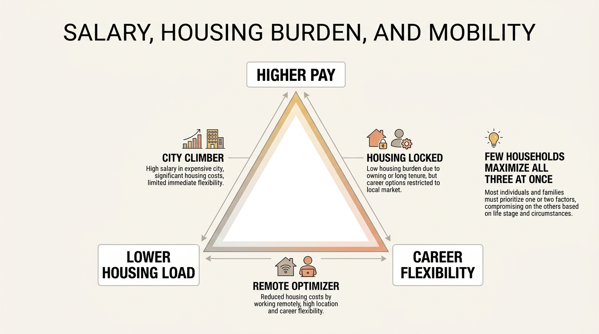

The Urban Premium Collapse
For years the metropolitan bargain looked obvious. Move to the expensive city, accept the rent and taxes, and collect a bigger paycheck with better career optionality. That bargain still exists in some niches, but it is far weaker than the headline salary gap suggests. In many cases the premium survives on paper while disappearing after housing, commuting, childcare, services, and time cost are counted honestly.
The right question is no longer whether major cities pay more. Many still do. The question is how much of that extra income remains as durable wealth after the full local cost stack is deducted. When the answer is thin, the city is no longer offering a wealth premium. It is offering an experience premium, a network premium, or a prestige premium. Those can still be rational. They are simply not the same thing.
Established fact: high-cost urban labor markets often pay more in nominal terms. Reasoned inference: when housing, taxes, and service inflation absorb most of the spread, the nominal wage premium can collapse into a weak or even negative wealth premium.

The Premium Used To Be Simpler
Older urban logic depended on three reinforcing conditions: city wages were materially higher, career ladders were denser, and housing costs had not yet widened enough to eat the entire difference. That framework produced genuine wealth advantages for ambitious workers early in their careers. A more expensive apartment was tolerable because the city offered a steeper earnings curve and more employer optionality.
That relationship has weakened. Housing now behaves less like a nuisance deduction and more like the dominant variable. Rent, mortgage qualification, property taxes, insurance, and basic family-scale space requirements can absorb the marginal gain before savings even begin. Once the household also pays more for childcare, transport, dining, and outsourced time-saving services, the city premium starts looking thinner than the compensation deck implied.
Nominal Income Is Not Conversion
Wealth is built from conversion, not gross pay. If a city raises salary by 35 percent but raises the recurring cost base by 30 to 40 percent while increasing taxes and reducing space flexibility, the extra income may not compound into a stronger balance sheet. This is why the article belongs beside One Salary, Three Futures, The Geographic Arbitrage Window, and The Rent vs Buy Reversal. All three show that where money is earned and where wealth is built are no longer automatically the same place.
| City premium component | What it adds | What can erase it |
|---|---|---|
| Higher salary | Raises gross cash flow and sometimes bonus potential | Rent, taxes, and lifestyle inflation can absorb most of the gain |
| Career density | Increases job-switching options and network surface area | Remote work and distributed hiring reduce the exclusivity of that edge |
| Status and access | Can improve client flow, social proof, and cultural reach | Often expensive to maintain and hard to translate into durable assets |
| Local appreciation narrative | Promises housing upside and scarcity value | High carry cost can outweigh the appreciation for years |
Time Cost Matters More Than People Admit
The collapse is not only financial. It is temporal. Long commutes, high-friction logistics, school placement stress, and the need to outsource daily life all consume time that could have been directed toward health, family, side income, or lower-burn decision-making. Time cost is easy to exclude because it does not appear on a brokerage statement. It is still part of the wealth equation because it changes earning durability and decision quality.
This is one reason some households accept lower headline pay outside the traditional core. They are not always maximizing current cash. They are sometimes maximizing retained margin plus recoverable time. If that trade preserves health, parenting bandwidth, or the ability to keep expenses structurally lower, it can dominate the bigger-city paycheck over a full decade.

Who Still Gets A Real Urban Premium
The premium is not dead for everyone. It still works for workers in steep winner-take-most sectors, for founders who need dense capital and talent networks, and for households that can capture city income while resisting city lifestyle creep. It can also work when housing is subsidized by timing, employer support, family structure, or an unusually favorable local niche.
What has changed is the burden of proof. A city should no longer be assumed to be the default wealth-maximizing choice simply because it has the strongest brand. The household should ask whether the city improves long-run savings rate, post-tax investable surplus, mobility, and career durability. If it does not, then the premium is mostly symbolic.
The Better Standard
The practical test is simple: calculate the spread after all recurring costs, then ask what happens to that spread under mild stress. If the city only works when bonuses stay high, rent stays stable, and household services remain manageable, the wealth case is fragile. If the household can still save aggressively, retain flexibility, and avoid housing lock-in, the premium may still be real.
- Compare locations on post-tax investable surplus, not only salary.
- Count time and service costs as real balance-sheet variables.
- Separate experience value from wealth value.
- Treat housing carry as a first-order constraint, not a footnote.
The Urban Question Now
The urban premium has not vanished. It has fragmented. Some cities still offer a real wealth edge to the right household in the right industry. Many now offer a thinner, more conditional advantage than their mythology suggests. That is the collapse worth understanding. The old automatic bargain has become a narrow, case-by-case calculation.
Source Frame
This analysis uses durable household-finance structure: nominal wage differences do not matter unless they survive taxes, housing cost, service inflation, and the time burden attached to local life.
What remains local and variable is the exact break-even point. That depends on industry, family structure, commuting pattern, rent-versus-own decision, and whether the city still offers a career-density advantage that cannot be replicated elsewhere.